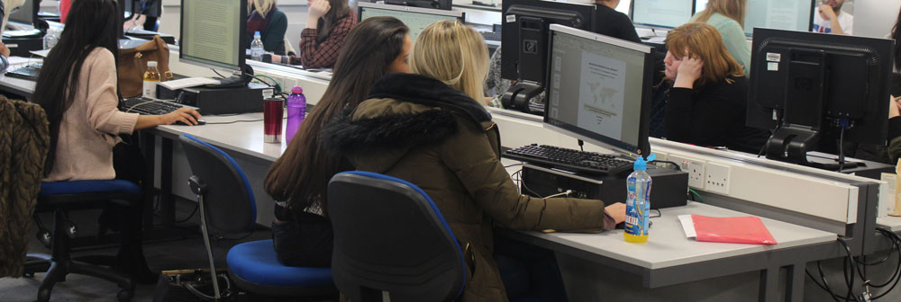

About Us
Our Department
We are the Journalism, Information and Communications Department within Manchester Metropolitan University. Our courses consist of different routes within the Department; they are the following Information and Communications, Multimedia Journalism, Web Development and Digital Media and Communications. The Geoffrey Manton (GM) building is the heart of our Department. We have fascinating facilities in our Department which is called The Multimedia Resources Library (MRL). In the Multimedia Resources Library (MRL), we have IT suites which contain PC’s and Apple Macs, with the latest software and hardware for our students to use to do their projects.
The Facilities
In our Department we have fully equipped video cameras and DSLR cameras for our student to loan and use for their creative assements. Apart from the MRL, we have other facilities across the campus like a 24/7 Library where students can loan books for their assignments. As well as in the Library we have three level floors of IT suites, quiet zones and group zones where students can study in regards to their preferences. On the other hand we have various Café Atrium across the campus where students could purchase hot and cold food, hot and cold drinks and sandwiches.
Teaching Staff
Our department senior lecturers have been teaching Web Development for 15 years and have great links within the industry. We also have events throughout the Department where specialised people from the industry talk to our students. Manchester is really big in the digital industry, so it gives amazing opportunities for our students when they are graduated. Manchester Metropolitan University is the number 1 greenest institution.
Finally, we think creativity all the time and we make our students into creative individuals as our strong programme helps our students get the required skills. As we follow industry standards.